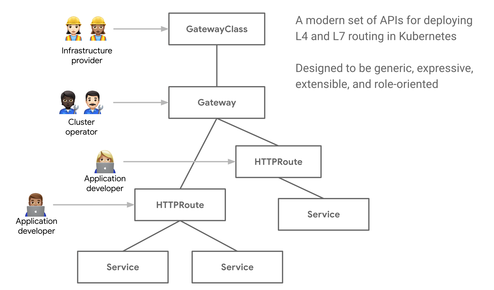
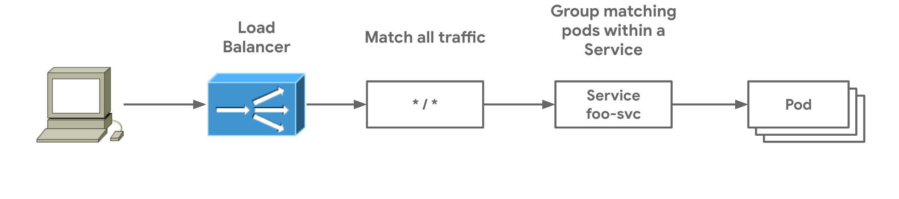

Kubernetes Gateway Api 介绍

文章目录
介绍
本文根据官方文档翻译汇总而成。
Gateway API 是一个由 Kubernetes SIG-NETWORK（网络兴趣小组）管理的开源项目。这是一个资源的集合，定义了 Kubernetes 中服务网络模型。这些资源，GatewayClass、Gateway、HTTPRoute、TCPRoute、Service 等等，目的是通过具有表现力的、可扩展的、面向角色的接口来发展 Kubernetes 服务网络，这些接口由许多供应商实现，并得到广泛的行业支持。下图是 Gateway API 的模型： 
特点
以下设计目标驱动了 Gateway API 的概念，说明了 Gateway 是如何改进了当前的标准，比如 Ingress。
- 面向角色：Gateway 是由 API 的资源组成，这些资源定义了使用和配置 Kubernetes 服务网络的组织角色
- 可移植的：这不是一个改进，而是应该保持不变的东西。就好比 Ingress 是一个有多种实现的通用规范一样，Gateway API 是设计成一个支持多种实现的可移植规范。
- 富有表现力的：Gateway API 资源支持一些核心函数，比如基于 header 的匹配、流量权重，和其它只能在 ingress 中通过自定义注解实现的功能。
- 可扩展的：Gateway API 允许自定义资源链接在 API 的不同层，这使得在 API 结构的合适位置进行细粒度定制成为可能。
其它一些值得注意的功能：
- GatewayClasses：负载均衡实现的正式化类型。这些类型使得用户更加容易使用，并且容易理解在 Kubernetes 资源模型中哪种类型的能力是可用的。
- 共享的 Gateway 和跨命名空间支持：通过允许独立的 Route 资源来附着到同一个 Gateway 上，来实现负载均衡和 VIP 的共享。这允许跨团队来共享基础设施，无需直接协调。
- 类型化的 Route 和类型化的后端：Gateway API 支持类型化的 Route 资源和不同类型的后端，这允许 API 可以灵活的支持不同的协议（比如 HTTP 和 gRPC）和不同的后端目标（比如 Kubernetes 服务，存储 buckets 等）。
为什么面向角色的 API 很重要
共享基础设施提出来一个通用的挑战：如何提供给基础设施用户灵活性的同时，保持基础设施拥有者的控制权。 Gateway API 通过面向角色的 Kubernetes 服务网络设计，来达到分布式灵活性和集中控制的平衡。它允许共享网络基础设施（硬件负载均衡，云网络，集群托管代理等）被许多不同的和非协调的团队使用，所有这些都受到集器操作人员设置的策略和约束的限制。下面的例子展示了实践中是如何工作的。
一个集群操作人员创建了一个从 GatewayClass 派生的 Gateway 资源，这个 Gateway 部署或者配置了它代表的底层的网络资源。通过 Gateway 和 Route 之间的路有附着过程，集群操作人员和指定的团队必须就可以附着到 Gateway 的内容达成一致，并通过该网关公开他们的应用程序。集群化的策略如 TLS 可以在 Gateway 上强制执行。同时，存储和网站团队运行在他们自己的命名空间，但是附着他们的 Route 到同样共享 Gateway，允许他们独立控制他们的路由逻辑。关注点分离允许存储团体管理他们自己的分流流量，同时中心化的策略和控制留给集群操作员管理。

概念
角色
Gateway API 中有 3 种主要的角色：
- 基础设施提供商
- 集群操作员
- 应用开发者 在某些情况下，可能有第四个角色，应用管理员。
资源模型
- GatewayClass：一组共享通用配置和行为的网关，每个 GatewayClass 由一个控制器处理，是一个集群范围的资源。
- Gateway：描述流量是如何被转发到服务的，即定义了一个请求，将流量从不知道 Kubernetes 的地方转发到了 Kubernetes 内部。
- Route ：定义了特定协议的规则，用于将请求从 Gateway 映射到 Kubernetes 服务，包含 HTTPRoute、TLSRoute、TCPRoute、UDPRoute、GRPCRoute 等。
GatewayClass、Gateway、xRoute 和 Service 的组合定义了一个可实现的负载平衡器，下图说明了不同资源之间的关系：

附着 Route 到 Gateway 上
当 Route 附加到 Gateway 上时，它表示应用于配置底层负载均衡器或代理的 Gateway 上的配置。Gateway 和 Route 的关系有：
- 一对一：一个 Gateway 对应一个 Route。
- 一对多：一个 Gateway 可以绑定多个 Route，由不同的团队拥有，并且可以跨多个命名空间。
- 多对一：Route 可以绑定多个 Gateway，允许单个 Route 控制跨多个 IP、负载均衡或者网络的应用程序的暴露。
使用示例
安装
一个 Gateway API 捆绑包代表了与 Gateway API 的一个版本相关的 CRD 和校验 webhook 的集合，每个版本包括两个具有不同稳定性的通道版本。这里安装标准通道版本，即里面所有资源版本都已经达到 beta 阶段。
|
|
部署简单的 Gateway
最简单的可能部署方式，由同一个拥有者部署一个 Gateway 和 Route 资源，这代表了 Ingress 类似的使用模型。这里，部署了一个 Gateway 和 HTTPRoute，来匹配所有 HTTP 流量，定向到一个名为 foo-svc 的服务，如下图所示。

|
|
这个 Gateway 代表来一个逻辑负载均衡器的实例化，它的模板来自 acme-lb GatewayClass，在 80 端口上监听 HTTP 流量。这个特定的 GatewayClass 自动分配一个 IP 地址，在部署将会展示在 Gateway.status 字段中。
下面的 HTTPRoute 定义了 Gateway 监听器的流量是如何被路由到后端的，因为没有 host 路由或者指定路径，HTTPRoute 将会匹配所有到达 80 端口的 HTTP 流量，然后发送到 foo-svc 的 pods。
|
|
参考
文章作者 yefengzhichen
上次更新 2022-11-30